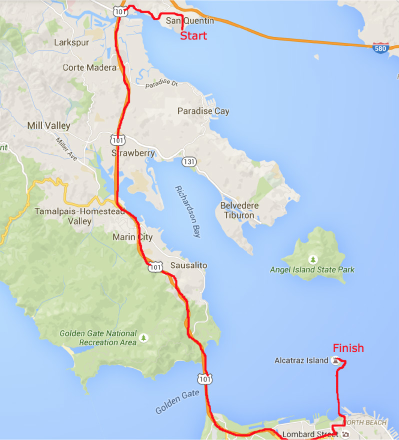

Prison to Prison Triathlon
You say you've always wanted to participate in a triathlon? You live in the Bay Area and you love history too? What about prisons? Historical prisons? Well we have an adventure for you!
You should absolutely consider being in the Prison to Prison Triathlon. This awesome triathlon will take you from San Quentin State Prison, south along beautiful highway 101 in the San Francisco Bay Area, across the world-famous Golden Gate Bridge, down historic Lombard Street, and across the bay to Alcatraz Island. This promises to be an exhilarating as well as educational adventure!